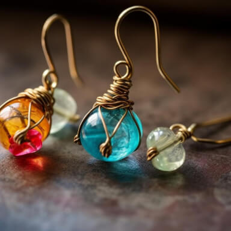

<section class="blog-details-section">
    <div class="container">
      <div class="blog-details-wrapper">
        <!-- Blog Details -->
        <div class="blog-details-content">
          <h3 class="blog-details-heading"> Fall Fashion 2024: Top Trends to Elevate Your Wardrobe </h3>
          <div class="blog-details-meta-wrapper">
            <div class="blog-details-author-info">
              
              <div class="blog-author-info-text">
                <span>Posted By</span>
                <h5 class="blog-details-author-name">Sarah Olivia</h5>
              </div>
              <a href="#" class="blog-details-meta">
                <svg xmlns="http://www.w3.org/2000/svg" width="16" height="16" fill="#000000" viewBox="0 0 256 256">
                  <path d="M208,28H188V24a12,12,0,0,0-24,0v4H92V24a12,12,0,0,0-24,0v4H48A20,20,0,0,0,28,48V208a20,20,0,0,0,20,20H208a20,20,0,0,0,20-20V48A20,20,0,0,0,208,28ZM68,52a12,12,0,0,0,24,0h72a12,12,0,0,0,24,0h16V76H52V52ZM52,204V100H204V204Zm92-76a16,16,0,1,1-16-16A16,16,0,0,1,144,128Zm48,0a16,16,0,1,1-16-16A16,16,0,0,1,192,128ZM96,176a16,16,0,1,1-16-16A16,16,0,0,1,96,176Zm48,0a16,16,0,1,1-16-16A16,16,0,0,1,144,176Zm48,0a16,16,0,1,1-16-16A16,16,0,0,1,192,176Z"></path>
                </svg>March 8, 2024 </a>
              <a href="#" class="blog-details-meta">
                <svg xmlns="http://www.w3.org/2000/svg" width="16" height="16" fill="#000000" viewBox="0 0 256 256">
                  <path d="M236.34,187.09A84,84,0,0,0,172.29,68.9,84,84,0,0,0,19.66,139.09l-6.84,23.26a20,20,0,0,0,24.83,24.83l23.26-6.84a83.94,83.94,0,0,0,22.76,6.74,84.06,84.06,0,0,0,111.42,41.26l23.26,6.84a20,20,0,0,0,24.83-24.83ZM62,155.5a11.88,11.88,0,0,0-3.39.49l-20.72,6.09L44,141.35a12,12,0,0,0-.93-9A60,60,0,1,1,67.7,156.92,12,12,0,0,0,62,155.5Zm150.89,24.8a12,12,0,0,0-.93,9l6.09,20.73L197.36,204a12,12,0,0,0-9.06.93A60,60,0,0,1,111,186.63a83.93,83.93,0,0,0,68.55-91.37,60,60,0,0,1,33.38,85Z"></path>
                </svg>240 Comments </a>
            </div>
          </div>
          <!-- BLOG DETAILS ARTICLE -->
          <article>
            <div class="blog-details-image-wrapper">
              
            </div>
            <p class="blog-details-desc"> As the leaves change colors and a crisp chill fills the air, it’s time to embrace the fall fashion of 2024. This season is all about bold expressions, cozy layers, and unique textures that redefine autumn style. </p>
            <p class="blog-details-desc"> When the temperature drops, cozy textures come into play. Shearling and faux fur are key materials in both a and accessories this fall. Whether it’s a shearling-lined jacket or faux fur cuffs on gloves, these plush details add warmth and opulence to any look. </p>
          </article>
          <!-- BLOG DETAILS ARTICLE -->
          <article>
            <h3 class="blog-details-title"> Chunky Knitwear with a Modern Twist </h3>
            <p class="blog-details-desc"> Knitwear is an undeniable fall staple, but this season, it’s getting a contemporary upgrade. Think oversized, chunky sweaters with intricate patterns, exaggerated sleeves, and bold colors like burnt orange, forest green, and deep plum. Pairing them with wide-leg pants or leather skirts offers a perfect balance of cozy and chic. </p>
            <p class="blog-details-desc"> In this blog post, we'll delve into effective strategies for optimizing website speed, covering everything from technical enhancements to content management. Learn how to implement these techniques to ensure your website loads quickly. </p>
          </article>
          <!-- BLOG DETAILS ARTICLE -->
          <article>
            <div class="blog-details-quote">
              
              <blockquote> “Success is not a single moment or grand gesture, but the result of consistent effort, learning from failures, and small steps taken daily. It’s about the journey, adapting through setbacks, and staying true to your vision.” </blockquote>
              <div class="blog-details-quote-author">
                <h5>Jhon Anderson</h5>
                <span>Founder & CEO</span>
              </div>
            </div>
          </article>
          <!-- BLOG DETAILS ARTICLE -->
          <article>
            <h3 class="blog-details-title"> Fall Fashion 2024: Top Trends to Elevate Your Wardrobe </h3>
            <p class="blog-details-desc"> Leather is no longer just for jackets. In 2024, we're seeing leather make a major impact in skirts, pants, trench coats, and even accessories. Matte finishes and vegan alternatives are also taking center stage, giving you more sustainable and versatile options. Rich shades like chocolate brown, burgundy, and charcoal dominate this trend. </p>
            <p class="blog-details-desc"> How to Style: Combine a leather skirt with a tucked-in silk blouse and knee-high boots for an edgy yet sophisticated look. Or, opt for a full leather trench coat to layer over your outfit for a bold statement. </p>
          </article>
          <!-- BLOG DETAILS ARTICLE -->
          <article>
            <h3 class="blog-details-title">Final Thoughts</h3>
            <p class="blog-details-desc"> Fall fashion in 2024 is all about balancing classic elements with bold, modern updates. Whether you’re a fan of timeless neutrals or looking to experiment with vibrant colors and unique textures, there’s something for everyone this season. Embrace these trends to elevate your wardrobe and step into fall with confidence and style. </p>
          </article>
          
          <!-- BLOG FOOTER SECTION -->
          <div class="blog-details-footer">
            <ul class="blog-details-tag-list">
              <li>
                <a href="#">Fashion</a>
              </li>
              <li>
                <a href="#">women's</a>
              </li>
            </ul>
            <div class="blog-details-share">
              <span>Share</span>
              <ul class="blog-details-share-list">
                <li>
                  <a href="#">
                    <svg xmlns="http://www.w3.org/2000/svg" width="16" height="16" fill="#000000" viewBox="0 0 256 256">
                      <path d="M128,20A108,108,0,1,0,236,128,108.12,108.12,0,0,0,128,20Zm83.13,96c-1,0-2.08,0-3.12,0a172.63,172.63,0,0,0-41.39,5.06A171.26,171.26,0,0,0,156,97.39,172.34,172.34,0,0,0,188.9,70.24,83.72,83.72,0,0,1,211.13,116ZM170,55.3a148.53,148.53,0,0,1-27,21.88,173.29,173.29,0,0,0-30.58-31.71A83.52,83.52,0,0,1,170,55.3Zm-84.46.27a149.23,149.23,0,0,1,35.9,32.87A147.73,147.73,0,0,1,64,100c-5,0-10-.26-14.94-.75A84.49,84.49,0,0,1,85.53,55.57ZM44,128c0-1.73.07-3.44.17-5.14A175.15,175.15,0,0,0,64,124a171.8,171.8,0,0,0,70.84-15.22,145.82,145.82,0,0,1,8.92,19.65,170.71,170.71,0,0,0-21.52,10.44,173,173,0,0,0-53.68,48.44A83.77,83.77,0,0,1,44,128Zm43.77,73.72a149,149,0,0,1,46.46-42.06,147.2,147.2,0,0,1,16-7.94,148.52,148.52,0,0,1,2.67,28A148.66,148.66,0,0,1,150,209.06a83.81,83.81,0,0,1-62.22-7.34Zm88.29-4.89c.56-5.68.86-11.4.86-17.14a172.57,172.57,0,0,0-3.72-35.54A148.85,148.85,0,0,1,208,140c1,0,2.07,0,3.11,0A84.07,84.07,0,0,1,176.06,196.83Z"></path>
                    </svg>
                  </a>
                </li>
                <li>
                  <a href="#">
                    <svg xmlns="http://www.w3.org/2000/svg" width="16" height="16" fill="#000000" viewBox="0 0 256 256">
                      <path d="M128,80a48,48,0,1,0,48,48A48.05,48.05,0,0,0,128,80Zm0,72a24,24,0,1,1,24-24A24,24,0,0,1,128,152ZM176,20H80A60.07,60.07,0,0,0,20,80v96a60.07,60.07,0,0,0,60,60h96a60.07,60.07,0,0,0,60-60V80A60.07,60.07,0,0,0,176,20Zm36,156a36,36,0,0,1-36,36H80a36,36,0,0,1-36-36V80A36,36,0,0,1,80,44h96a36,36,0,0,1,36,36ZM196,76a16,16,0,1,1-16-16A16,16,0,0,1,196,76Z"></path>
                    </svg>
                  </a>
                </li>
                <li>
                  <a href="#">
                    <svg xmlns="http://www.w3.org/2000/svg" width="16" height="16" fill="#000000" viewBox="0 0 256 256">
                      <path d="M228,112c0,23.6-8.29,45.23-23.35,60.88C190.52,187.57,171.33,196,152,196c-15.45,0-26.78-4.18-34.89-9.31l-9.43,40.06a12,12,0,1,1-23.36-5.5l32-136a12,12,0,1,1,23.36,5.5l-16.45,69.93C126.72,164.86,135.16,172,152,172c25.56,0,52-22.45,52-60A68,68,0,1,0,77.09,146a12,12,0,0,1-20.77,12A92,92,0,1,1,228,112Z"></path>
                    </svg>
                  </a>
                </li>
                <li>
                  <a href="#">
                    <svg xmlns="http://www.w3.org/2000/svg" width="16" height="16" fill="#000000" viewBox="0 0 256 256">
                      <path d="M218.12,209.56l-61-95.8,59.72-65.69a12,12,0,0,0-17.76-16.14L143.81,92.77,106.12,33.56A12,12,0,0,0,96,28H48A12,12,0,0,0,37.88,46.44l61,95.8L39.12,207.93a12,12,0,1,0,17.76,16.14l55.31-60.84,37.69,59.21A12,12,0,0,0,160,228h48a12,12,0,0,0,10.12-18.44ZM166.59,204,69.86,52H89.41l96.73,152Z"></path>
                    </svg>
                  </a>
                </li>
              </ul>
            </div>
          </div>
          <!-- BLOG DETAILS NAVIGATION -->
          <div class="blog-details-navigation">
            <a href="blog-details.html" class="blog-details-navigation-item">
              
              <div class="blog-details-navigation-item-text">
                <h4 class="blog-details-navigation-title">
                  <span class="link-animation">Redefining the Office Look in 2024</span>
                </h4>
                <button class="blog-details-navigation-link" href="#">
                  <svg xmlns="http://www.w3.org/2000/svg" width="16" height="16" fill="#000000" viewBox="0 0 256 256">
                    <path d="M208.49,199.51a12,12,0,0,1-17,17l-80-80a12,12,0,0,1,0-17l80-80a12,12,0,0,1,17,17L137,128ZM57,128l71.52-71.51a12,12,0,0,0-17-17l-80,80a12,12,0,0,0,0,17l80,80a12,12,0,0,0,17-17Z"></path>
                  </svg> Prev Blog </button>
              </div>
            </a>
            <a href="blog-details.html" class="blog-details-navigation-item">
              <div class="blog-details-navigation-item-text">
                <h4 class="blog-details-navigation-title">
                  <span class="link-animation">How to Build an Eco-Friendly Wardrobe</span>
                </h4>
                <button class="blog-details-navigation-link" href="#"> Next Blog <svg xmlns="http://www.w3.org/2000/svg" width="16" height="16" fill="#000000" viewBox="0 0 256 256">
                    <path d="M144.49,136.49l-80,80a12,12,0,0,1-17-17L119,128,47.51,56.49a12,12,0,0,1,17-17l80,80A12,12,0,0,1,144.49,136.49Zm80-17-80-80a12,12,0,1,0-17,17L199,128l-71.52,71.51a12,12,0,0,0,17,17l80-80A12,12,0,0,0,224.49,119.51Z"></path>
                  </svg>
                </button>
              </div>
              
          </div>
        </div>
        
        <!-- Blog Widget -->
        <div class="blog-widget">
          <div class="blog-widget-wrapper">
            <!-- Blog Widget Card -->
            <div class="blog-widget-card">
              <h3 class="blog-widget-card-title">Search</h3>
              <div class="blog-widget-card-body">
                <p class="blog-widget-card-desc"></p>
                <div class="blog-widget-card-search-warpper">
                  <input type="text" placeholder="Search Blogs">
                  <button></button>
                </div>
              </div>
            </div>
          </div>
        </div>
      </div>
    </div>
  </section>